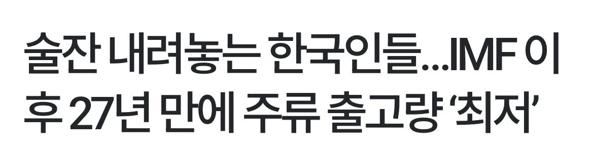
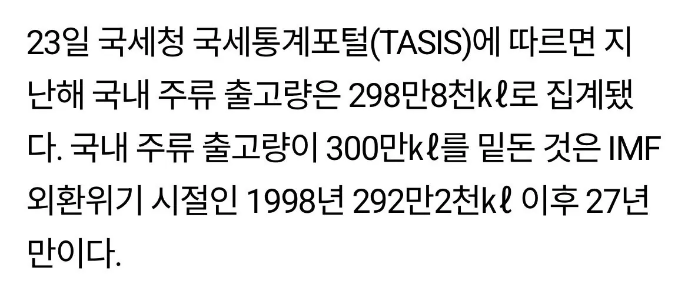
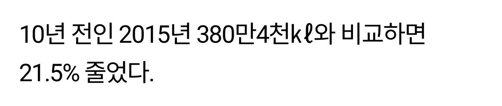
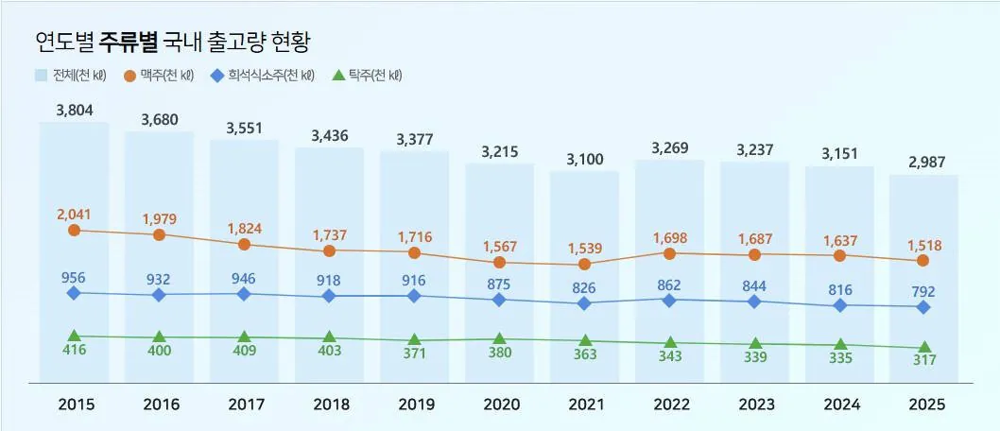

솔직히 병당 2천원도 안하고
살때 공병가격 제하고 사는데
5천원 6천원 하는건 양심 밥말아먹은거 아니냐
냉장고에 보관하고 갖다주는데 왜 그렇게 비싸게 팔아




솔직히 병당 2천원도 안하고
살때 공병가격 제하고 사는데
5천원 6천원 하는건 양심 밥말아먹은거 아니냐
냉장고에 보관하고 갖다주는데 왜 그렇게 비싸게 팔아
요즘 근데 혼술하는 사람이 많던데 판이 커지는게 귀찮고 피곤하다면서 맨날 혼술함 그게 제일 위험한 것 같음
매일같이 소주를 마시면 간경화로 말로가 안좋을텐데
어차피 술자리에서 하는 얘기 다 거기서 거기 + 쳐먹는 안주, 술도 거기서 거기인데. 그 시간에 집에서 애들이랑 놀고 와이프 찌찌나 만지는게 낫지.
진짜 술자리 자체가 씹미개 못배워 쳐먹은 늙크크 문화지
우리집앞에 고기집이 인당 2병까지는 5천원 그뒤로는 병당 2천원받는데 , 여기는 손님 진짜 ㅈㄴ많음 ㅋㅋ사람들 다 와서 2병씩 초고속으로 까버리고 2천원가능해져도 겨우 인당 한~두병만 더 마시는듯한데 다들 우리 이만큼은 2천원에 먹었다면서 좋아하면서 나감 ㅋㅋ
장사천재냐? 나여~
ㅋㅋ근데 종종 세~네명이와서 한 20병 넘게 먹고가는사람들 보이는데, 그런테이블에서는 마진재미없거나 마이너스나긴할수도??
괜찮은 판매전략인듯ㅌㅋ
술도 그만 마시고 담배도 다들 끊자
세상 모든것은 더 재밌는게 있다면 할 이유가 없음
술문화 자체를 극혐하는 사람들이 많았는데 코로나를 기점으로 이런 문화가 사그라든 영향도 있는듯.
코로나 전에 다니던 회사는 일주일에 한번씩 회식했는데 지금은 분기에 한번 할까말까 하니까 너무 좋음
ㄹㅇ 술 문화 개 극혐했음 자기들 술 먹는데에 꼭 따라오라 해서 사람 피곤하게 함
다들 무의식중에 저출산 고령화 대비하고 있는건지도 모르지..
쓰고 맛도없고 건강에 나빠
아마 그냥 술값을 35%로 잡고 넣어서그런가? 얼추 가격이 맞긴하네
걍 회식, 모임이 줄어들고 과거보단 건강을 신경쓰는 문화가 원인인데 뭔 소주값때문에 줄어든줄 아는 사람 많네
막상 술모임 나가면 소주값 5천원으로 투덜대는 사람 하나도 없다 강남에 7,8천원하는 곳가야 ufc돼서 술자리 토크 주제까지 가는거지
나도 친구들 만나더라도 맥주나 소주 잘 안마심
차라리 중국술이나 위스키를 마시지 뭔가 소주 맥주는 마시면 머리 아프고 냄새나고 쓰고... 그래서 잘 안먹게 됨
중국술은 향이 좋고 위스키는 뭔가 싸 하면서 깨끗하고 다음날 머리가 안아픈데
소주맥주는 마시는 내내 힘듦...
3천원까지가 마실만 했다
안먹는건 안먹는건데 거품물고 소주 쓰레기, 술자리 병신짓 거리는 애들은 대충 와꾸랑 체취가 예상이 되냐 왜 ㅋㅋㅋㅋㅋㅋㅋㅋ
ㄹㅇ 걍 웃김ㅋㅋ
인간관계 박살나면 술자리도 없으니깐ㅋ 돈안쓰는추세로 변하는20대라면 이해라도가는데 나이처먹고 소주가 입에써요 하~술이 맛이없어요ㅠㅠ
쓰레기같은 디저트나 장난감들 창렬가격에도 불티나는거보면 소주가 단순 가격때문에 망했다기보다
트랜드랑 안맞는게 더 크지
맥주나 소주가 인기 없어진거지 술이 인기 없어진거 아님 이제 양이 아니라 질로 승부하는거지
걍 소량을 비싸게 먹게 됨 주변애들 다 와인 위스키만 마시고
매장에서 술을 팔고 싶으면 맥주 소주 갖다버리고 하이볼이랑 하이츄 라인으로 옮겨야함
많이 마셔서 좋을거 없고
자기 몸을 가꾸는게 트렌드니 점점 줄어들지
옆나라 일본도 논알콜 무알콜 시장이 급격하게 성장중이랬음
우리도 비슷하게 갈거임
집에서 한캔씩 먹으니까 식당을 안가게 된다
요새 밖에서 술먹는게 너무 부담 스러워
삼겹살이 1인분에 15000원이라 남자 4명이서 고기 먹고 술좀 먹으면 10만원은 우습더라
술도 그래서 요새 맥주는 안먹고 소주로 후딱먹고 헤어지려고 하고 있음
시원한 생맥 먹고싶은거 아니면
밖에서 안마심
술 안마시고 n빵으로 4,5만원 쌩돈 몇번내면 안감ㅋㅋ
반대로 위스키 봐라 없어서 난리지
그냥 소주를 좆같아 하는거잉ㅅ
가격때문에? 글쎄?
난 가격이 부담된적은 없는데 술먹는 양은 많이 줄었음
가격이 문제면 소주 맥주 많이 먹으려고 3000천원 파는데 찾아가면되는데 그런곳 손님 그렇게 많이 없던데?
그냥 문화가 바뀌고 있고 그 선두에 20대가 있어서 그런것 뿐인거같은데
원래 20대때 가장 많이 먹고 갈수록 주량이 적어지기도 하고 술 못먹게되는 사람도 나오고 하는데
지금 20대가 술안먹고 인구도 적으니 그냥 딱 저 그래프가 정상임
imf? 돈없어서 못먹어? 씹소리지 집에서 50만원짜리 위스키 마시는 사람이 늘었으면 한참늘었는데
병신같은 주세법이나 손좀 봐야함
주류도매회사함
판매매출보니
맥주소주비율이 줄고 위스키 와인이 늘음
예전엔 10만원가지고 abcde 2만원씩 썼는데
Ab에서 5만원씩 쓰는구조.
잘되는 업장은 더 잘되고
안되는 업장은 망하고
30대에 아직도 술 맛을 모름
회식이나 친구들끼리 만나면 그냥 분위기 맞출려고 마심
술 밖에서 먹으면 넘 비싸 소주맥주먹는데 안주보다 술값이 더 많이나와 항상
보통 외식쪽에서 30-40% 원가잡는데
소주도 그걸 따라가는 가장 큰 이유중 하나는 그냥 회전률 때문임..
술들어가는 테이블은 안먹는 테이블에 비해 회전이 ㅈㄴ안되기때문
결국 매출은 테이블단가*테이블수*회전수
인데
술들어가는순간 회전수에서 좆박으니까
아닌데? 우리집앞 1500원 2000원은 잘되던데?
그런곳은 애초에 회전수가 1이 안넘어가니까
사람채워보려고 이벤트걸고 발버둥치는것일 가능성이 높다, 아님 건물주던가ㅋㅋ
모임에서 2차로 노래주점 갔는데 소주 맥주 1병에 6천원이더라 진짜 바로 나가고싶었는데 분위기 엎기싫어서 걍 있었음 ㅜ
하 저딴 쓰래기를 6천원에
인건비가올라갓는데 원가타령해봐야뭐하냐
비싸면 안먹으면되는거지 6천원이라고지랄하는건 병신임
20년전엔 최저2천원~3천원에 소주2~3천원해서
월세내고 남길거남겻겟지
지금은 최저1만원인데 소주3천원그대로팔라는건 병신인거 3천원에똑같이팔면
인건비월세는올랏는데 사장이장사해봐야돈이안남으니 망하더라도 올리는거고 그중에안망하는곳은살아남는거지
체감상6천원비싸면 안사먹으면됨
아무리원가가 1원이여도 100배붙여서100원에판다해도 인건비안나와서 장사는망함
최저가 오르면 물가도 다 오르는법이지뭐
니네말대로 소주2천원에팔아도 어차피망해
6천원올리고 누군살아남고누군도태되겟지뭐
말이많다
미안
코로나 때문에 회식문화 박살, 대학생들 음주파티 박살
한국만의 현상은 아니고 미국도 주류 소비 인구가 매년 줄어들고 있음.
대표적인 주류 기업인 STZ의 주가가 24년 4월에 274달러로 최고점이었는데 지금 130달러임. 얘네는 논알콜음료쪽으로 활로를 뚫으려고 시도하는 중임.
덧붙여서 미국은 2024년쯤에 이미 일일 대마초 소비량이 일일 주류 소비량을 추월해버림.
소주가 개쓰레기 술인데다가 탐욕스럽게 도수 낮춰가며 창렬된 것도 영향이 있을듯. 소주 안마신지 10년 넘음
쓰레기 소주 마시느니 안마시고만다
편의점에서 필라이트 2캔이랑 안주사먹음;
니가 식당차려서 2천원에 팔면 대박나겟노 ㅋㅋㅋㅋ 인당 두병먹고 안주하나 먹고 두시간 앉아잇다 가면 매출 잘나오겟네 ㅋㅋㅋ 좋아보이는데 왜 안함?
그래서 술 안먹고 2시간 앉아있다 간다
가성비 쓰레기 취미
미개한 문화였지
점점 정상화되는 과정이라고 본다